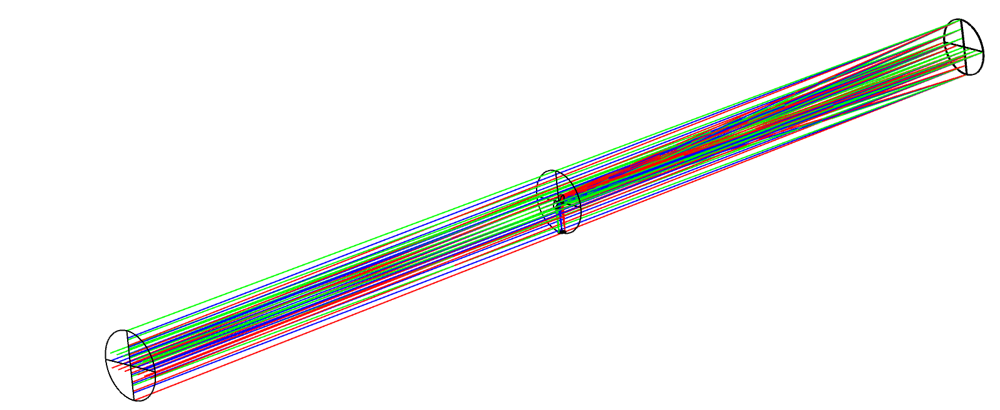

Ichrak Mansouri
Nanofabrication, Photonics & Optics Engineering student | Cleanroom Process, Optical Design and Multiphysics Modelling, from Institut d'Optique Graduate School and Université Paris-Saclay.

I build and characterize devices at the intersection of nanofabrication, photonics and semiconductor physics, from cleanroom process work on two-dimensional materials to optical system design and electrothermal modelling. The five projects below range from independent device fabrication at a CNRS laboratory and an industrial R&D internship at HORIBA, through a from-scratch optical design study and an automated cold-atom experiment, to a statistical-mechanics simulation of a frustrated magnetic system.

Independently fabricated 36 graphene/hBN devices and proposed a new conductance-based definition of thermal rectification for supported 2D materials.
MAR 2026 – AUG 2026 View project →
Built and fully rewrote in Python an optimization tool matching recorded grating line density to a target polynomial law, across 18 interdependent parameters.
MAY 2025 – AUG 2025 View project →
Designed and compared five reflective telescope architectures under a shared cahier des charges, down to ~8 µm coma on the Newton design.
MAR 2025 – MAY 2025 View project →
Rebuilt a cold rubidium cloud after a hardware failure, then automated its time-of-flight characterization with a custom Arduino + Python pipeline.
2024 – 2025 View project →
Built a Monte Carlo (Metropolis) simulation showing how geometric frustration on a hexagonal lattice erases the sharp phase transition seen on a square lattice.
2025 – 2026 View project →